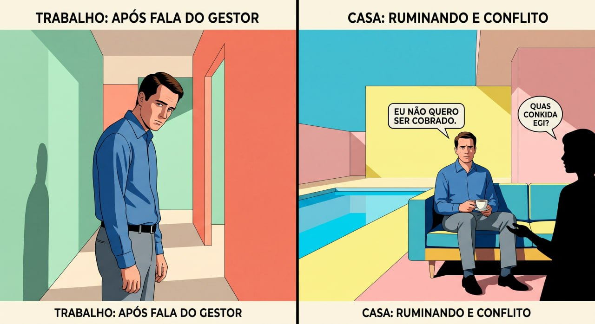
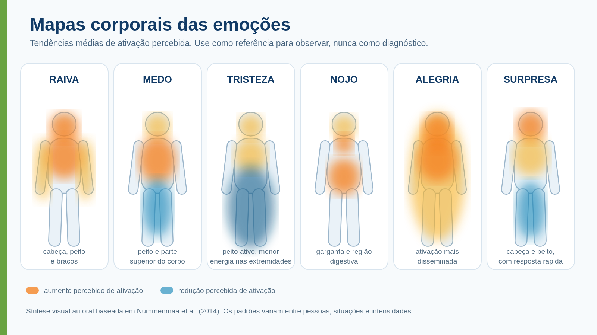
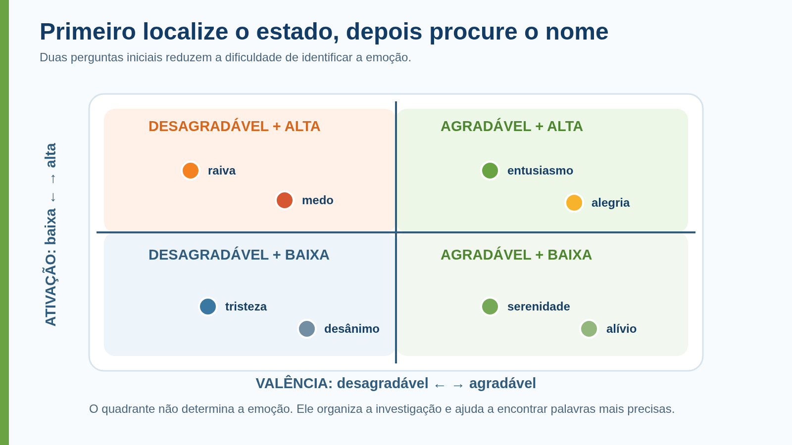
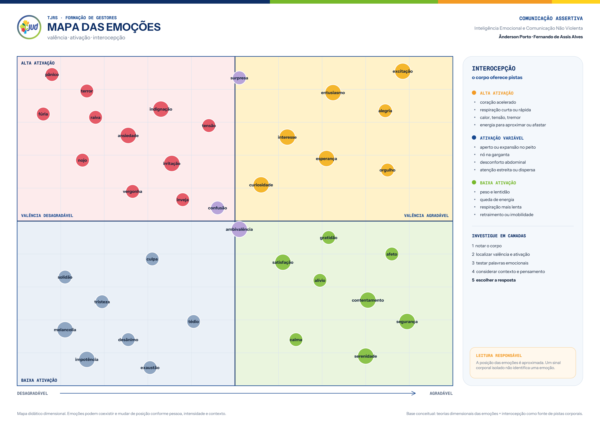

Comunicação Assertiva:Inteligência Emocional e Comunicação Não Violenta
Consciência, autorregulação e diálogo aplicados à gestão.
Dia 1 · 31 de agosto de 2026
Fernando de Assis Alves
Pedagogo, mestre em Educação e Comunicação pela UnB, doutorando em Educação pela Universidade de Lisboa e em Educação, Comunicação e Tecnologias pela UnB. Especialista em Gestão Pública e Sociedade.
Servidor do STJ, professor e formador na administração pública. Possui experiência em educação, tecnologias, comunicação, inovação, inteligência artificial, políticas públicas e desenvolvimento de competências complexas.

Ânderson Porto
Facilitador, palestrante e instrutor há mais de 12 anos em programas formativos para órgãos do Poder Judiciário. Mestrando em Gestão Pública pela UnB e especialista em Inovação em Tecnologias Educacionais.
Atua no desenvolvimento de lideranças, comunicação, negociação, gestão de conflitos, inovação e equipes híbridas. Criador do Canvas de Negociação Criativa.

Uma comunicação que mobilizou emoções agradáveis
Na sua percepção, quais características da comunicação foram decisivas para produzir esse resultado?
Que aspecto deseja lapidar em sua comunicação para favorecer emoções agradáveis, inclusive em situações desafiadoras?
Primeira rodada: recordar e reconhecer
O que foi decisivo?
Pessoa A compartilha. Pessoa B escuta.
Pessoa B compartilha. Pessoa A escuta.
Registrem uma característica decisiva e troquem de dupla.
Segunda rodada: compreender o que funcionou
Retome a experiência com uma nova dupla e aprofunde sua leitura sobre o que tornou aquela comunicação significativa.
Pessoa A compartilha. Pessoa B escuta.
Pessoa B compartilha. Pessoa A escuta.
Registrem outra característica e troquem de dupla.
Terceira rodada: transformar inspiração em intenção
Compartilhem o aspecto que desejam desenvolver para situações desafiadoras.
Complete: “Quero lapidar minha capacidade de...”
Compartilhamento voluntário apenas da intenção de desenvolvimento.
Convite para o dia
Compartilhe experiências, perguntas e aprendizados que possam contribuir com o grupo.
Expresse ideias e discordâncias com clareza e empatia.
Escute com atenção, reduza distrações e envolva-se nas conversas e atividades.
Percurso formativo dos três dias
Objetivos de aprendizagem do Dia 1
Emoções, sinais corporais, pensamentos e impulsos presentes em uma situação.
Fatores que contribuem para a ativação e a escalada da raiva.
O protocolo PAUSA a uma situação profissional desafiadora.
Uma mensagem reativa com mais clareza, responsabilidade e intenção.

O relatório que não ficará pronto
O servidor informa que recebeu outra demanda urgente da direção e que parte dos dados necessários chegou incompleta.
Duas perguntas para iniciar o Mapa do Caso
Quais fatos uma câmera, uma gravação ou um registro documental poderia confirmar?
Registre palavras, ações, horário, contexto e informações explicitamente apresentadas.Quais avaliações, generalizações, suposições ou conclusões aparecem como se fossem fatos?
Observe especialmente rótulos, intenções atribuídas e expressões como “sempre” ou “nunca”.Foco desta etapa: separar observação e interpretação. As demais perguntas virão depois.
Mapa do Caso, versão 1: observação e interpretação
Identifique os fatos observáveis e as interpretações.
Compare classificações e justifique divergências com base no texto.
Construam um quadro comum com duas colunas: observações e interpretações.
Acrescentem itens sem repetir e guardem o mapa para a segunda etapa.
Autorregulação não retira a emoção da sala. Impede que a primeira reação decida sozinha.
O que é inteligência emocional?
Perceber o que acontece em si.
Ler emoções e contexto no outro.
Criar espaço antes de reagir.
Agir com consciência e assertividade.
O iceberg da inteligência emocional
Cinco capacidades no modelo de Goleman
A competência emocional começa na percepção de si, orienta a ação e alcança a qualidade das relações.
Quatro habilidades no modelo de Mayer, Salovey e Caruso
| Habilidade | Pergunta central | Evidência observável |
|---|---|---|
| Perceber | O que acontece comigo e na interação? | Nomeia sinais, intensidade e contexto sem diagnosticar o outro. |
| Utilizar para pensar | Para onde a emoção dirige minha atenção? | Identifica prioridades e pontos cegos produzidos pelo estado emocional. |
| Compreender | Como surgiu e para onde pode evoluir? | Relaciona situação, avaliação, emoção, impulso e consequência. |
| Administrar | Que resposta atende ao objetivo e ao contexto? | Seleciona estratégia, regula a expressão e monitora o resultado. |
Indicadores comportamentais da inteligência emocional
Identifica emoção, intensidade e sinais corporais.
Diferencia fato, interpretação e hipótese.
Retarda impulso e escolhe estratégia proporcional.
Expressa com clareza, escuta e checa compreensão.
Relação entre competência técnica e competência emocional
Competência profissional
- Conhecimento jurídico e processual
- Planejamento e capacidade decisória
- Responsabilidade funcional
- Critérios, normas e entregas
Competência emocional
- Estabelecer limites e discordar
- Cobrar resultados e decidir
- Enfrentar condutas inadequadas
- Conduzir conversas com proporcionalidade
A diferença está em não transformar a reação imediata em método de gestão.
Autopercepção, valores e coerência profissional
O que estou tentando proteger, realizar ou evitar?
Que valor profissional está mobilizado nesta situação?
Minha resposta concreta está coerente com esse valor?
Emoções como sistemas de orientação
Ela surge quando uma situação é avaliada como relevante para necessidades, valores, vínculos, objetivos ou segurança. Essa avaliação mobiliza, ao mesmo tempo, experiência subjetiva, fisiologia, atenção, interpretação e disposição para agir.
Não é inimiga da razão
Emoção e cognição trabalham integradas. A emoção seleciona relevâncias e influencia julgamentos.
Não é uma ordem
Sentir algo não determina o comportamento. A informação emocional precisa ser interpretada no contexto.
Componentes do processo emocional
O que sentimos subjetivamente.
Ativação, tensão, respiração e energia.
O que ganha prioridade perceptiva.
O significado atribuído à situação.
Aproximar, proteger, reparar ou afastar.
O problema não é sentir, mas perder flexibilidade para interpretar e responder.
Funções das emoções
Destacam algo relevante.
Mobilizam o corpo para agir.
Sugerem aproximação, proteção ou reparação.
Influenciam memória e interpretação.
Sinalizam nosso estado aos outros.
Favorecem respostas rápidas.
Informação não é comando. A emoção participa da decisão, mas não precisa decidir sozinha.
Diferença entre emoção, impulso, comportamento e escolha regulada
Raiva
Interromper ou elevar a voz
Repreender publicamente
Pausar, organizar fatos e retomar
Valência e nível de ativação emocional
Raiva, medo, ansiedade.
Entusiasmo, alegria, interesse.
Tristeza, desalento, cansaço.
Calma, alívio, serenidade.
Emoção, sentimento, humor, pensamento, impulso e comportamento
| Conceito | Definição operacional | Exemplo |
|---|---|---|
| Emoção | Processo breve orientado por avaliação relevante. | Raiva diante de interrupção percebida como desrespeito. |
| Sentimento | Experiência consciente e nomeada. | “Estou irritado e frustrado.” |
| Humor | Estado difuso e mais duradouro. | Irritabilidade ao longo do dia. |
| Pensamento | Interpretação, lembrança ou previsão. | “Ele não respeita minha liderança.” |
| Impulso | Tendência imediata de ação. | Interromper ou responder com ironia. |
| Comportamento | Ação efetivamente realizada. | Repreender publicamente. |
Emoção, sentimento e expressão emocional
| Fenômeno | Definição operacional | Exemplo |
|---|---|---|
| Emoção | Resposta coordenada que modifica corpo, atenção e tendência de ação. | Ativação diante de uma ameaça percebida. |
| Sentimento | Experiência mental consciente do estado emocional e corporal. | “Estou com medo e inseguro.” |
| Expressão emocional | Mudanças observáveis na face, na voz, na postura e no movimento. | Fala acelerada, retraimento ou tensão facial. |
Princípio: não demonstrar uma emoção não significa não senti-la; demonstrá-la não significa tê-la identificado com precisão.
Participação do corpo na experiência emocional
James-Lange
A percepção das mudanças corporais participa da experiência consciente da emoção.
Cannon-Bard
A experiência emocional não depende de uma sequência rígida em que o corpo reage primeiro.
Interocepção e percepção do estado interno
Interocepção é a percepção de sinais originados no interior do organismo: batimentos, respiração, temperatura, tensão, desconforto visceral e alterações de energia.
O contexto ajuda a construir significado.
Onde percebo ativação ou redução de energia?
Há calor, pressão, tensão, tremor, vazio ou peso?
Quero aproximar, afastar, atacar, proteger, esconder ou paralisar?
Mapas corporais das emoções

Uso responsável: referência para auto-observação, não diagnóstico nem dicionário universal do corpo.
Valência e ativação emocional

Primeiro localize a qualidade e a ativação do estado; depois teste palavras emocionais mais precisas.

Depois da fala do gestor
Esses sinais podem sugerir desânimo ou tristeza, mas a postura corporal, isoladamente, não revela com certeza qual emoção ele sente.
Ruminação e transbordamento emocional
Ele chega em casa ainda preso ao episódio. Quando a esposa pergunta sobre o dia, desconversa e evita contar o que aconteceu.
Perguntas para analisar as duas cenas
Quais fatos, sinais corporais, pensamentos e impulsos aparecem no trabalho e em casa?
Como variam a valência, a ativação e as emoções possíveis entre as duas cenas?
O que ajudaria o servidor a reconhecer o estado e recuperar margem de escolha antes de agir?
Produto: Mapa de Perspectiva com a evolução da experiência emocional entre as duas cenas.
Construção do Mapa de Perspectiva
Registrem fatos, corpo, pensamento e impulso.
Marquem valência, ativação de 0 a 10 e emoções possíveis.
Definam como reconhecer o estado e ampliar a escolha.
Compartilhem uma hipótese e um cuidado de interpretação.
Oportunidades de regulação no ciclo emocional
Escolher quando, onde e em que condições conversar.
Ajustar ambiente, participantes, tempo ou informação.
Sair da ruminação e voltar a fatos e objetivos.
Considerar explicações alternativas.
Ajustar ativação, tom, canal ou momento.
Autoconsciência emocional
O que estou sentindo?
O que pode ter mobilizado isso?
Onde e como aparece?
Que história estou contando?
O que tenho vontade de fazer?
O que preciso preservar?
Quem reconhece o próprio estado possui mais opções para administrá-lo.
Como a raiva apareceu no seu corpo?
Retome mentalmente a situação segura escolhida: mandíbula contraída, calor no rosto, peito acelerado, mãos tensas, respiração curta, inquietação, fala mais rápida ou vontade de interromper.
São pistas, não provas. Cada pessoa desenvolve um padrão corporal próprio de alerta.
Investigue a sequência
- Qual sinal apareceu primeiro?
- Como a intensidade mudou?
- Que pensamento e impulso vieram junto?
- O que parecia estar em risco?
Varredura corporal orientada
Perceber pés, postura e respiração sem corrigi-la.
Cabeça, mandíbula, garganta, peito, abdômen, mãos e pernas.
Nomear sensações concretas e estimar intensidade de 0 a 10.
Conectar sensação, situação, pensamento, emoção possível e impulso.
Nomeação emocional e ampliação da escolha
Algo relevante ocorreu.
Meu corpo se mobilizou.
Irritação e insegurança.
“Estou contando que fui desrespeitado.”
Meu impulso é responder já.
Qual ação serve ao objetivo?
Escala de intensidade emocional
Autorregulação, repressão, supressão e descarga
| Processo | O que acontece | Risco ou limite |
|---|---|---|
| Autorregulação | Reconhece a emoção e escolhe como responder. | Exige prática, estratégia e flexibilidade. |
| Repressão/negação | Evita reconhecer ou admitir a experiência. | A emoção segue influenciando julgamento e corpo. |
| Supressão expressiva | Inibe a demonstração externa já ativada. | Pode ajudar pontualmente, mas não resolve o processo. |
| Descarga impulsiva | Expressa sem considerar proporcionalidade. | Escalada, dano relacional e arrependimento. |
| Ruminação | Repete ofensa, culpa e vingança. | Mantém ou intensifica a ativação. |
O que preciso preservar?
O que a emoção informa?
A intensidade corresponde ao presente?
Que informação falta?
O que aumenta a chance de resposta útil?
Burrão e a meta: emoção no banco do passageiro.
Autorregular não é parar de sentir. É manter o objetivo na mira e escolher o próximo movimento.
Processamento rápido de ameaças
O cérebro possui sistemas capazes de responder rapidamente a sinais considerados relevantes. Sob intensidade elevada, a atenção tende a se estreitar, experiências anteriores ganham peso e diminui a capacidade de considerar interpretações alternativas.
Permite agir antes de uma análise extensa quando há risco.
Experiências anteriores influenciam o significado atribuído ao presente.
Planejamento e monitoramento dependem de redes integradas, inclusive áreas pré-frontais.
Emoção e cognição em redes integradas
e responder
Recorde uma situação em que sentiu muita raiva
Pessoa B escuta com presença, sem interromper, aconselhar, julgar ou interpretar.
Pessoa A oferece atenção e espaço para que a experiência seja organizada em palavras.
O que a raiva tornou visível?
O que aconteceu de forma concreta?
Que sinais apareceram e qual foi a intensidade?
O que você pensou e teve vontade de fazer?
O que a raiva parecia tentar proteger, recuperar ou reparar?
Ponto de partida: a raiva pode trazer informação importante, mas interpretação e resposta ainda precisam ser examinadas.
Raiva: função, ativação e possibilidades de resposta
Funções possíveis da raiva
Injustiça ou tratamento desigual.
Desconsideração ou humilhação.
Invasão ou impedimento de objetivo.
Ameaça à dignidade ou ao papel.
Acordo ou padrão violado.
Frustração acumulada.
Sensação de impotência.
Energia para enfrentar o problema.
Sinal não é sentença: a raiva informa relevância, mas interpretação e resposta ainda precisam ser examinadas.
Dimensões da experiência da raiva
| Dimensão | Pergunta de investigação |
|---|---|
| Frequência e intensidade | Com que regularidade ocorre e quanto varia da irritação à fúria? |
| Duração | Dissipa-se após o episódio ou permanece por horas? |
| Gatilho | Que situações costumam anteceder a ativação? |
| Expressão | Aparece como confronto, ironia, silêncio, evitação ou ruminação? |
| Função percebida | Busca proteger limite, recuperar controle, punir ou evitar vulnerabilidade? |
| Consequência | A resposta resolve, adia ou amplia o problema? |
Ciclo de escalada da raiva
Servidor interrompe em reunião.
“Quer me expor.”
Calor, tensão, fala rápida.
“Sempre faz isso.”
Recuperar controle.
Crítica pública.
Silêncio e conflito posterior.
Gatilhos, vulnerabilidades e contexto
| Gatilho possível | Vulnerabilidade possível | Planejamento preventivo |
|---|---|---|
| Interrupção | Privação de sono | Reduzir exposição e combinar regras de fala. |
| Crítica pública | Dia de alta pressão | Pedir dados e retomar em ambiente adequado. |
| Atraso | Frustrações anteriores | Separar episódio atual do histórico. |
| Mudança de prioridade | Falta de controle | Definir canal, critério e responsável. |
| Mensagem ambígua | Sobrecarga informacional | Checar intenção antes de concluir. |
Ruminação
- Repete a cena e a ofensa
- Confirma culpa e intenção hostil
- Mantém ativação e estreita alternativas
- Prepara descarga ou vingança
Reflexão orientada
- O que sei e o que suponho?
- Que informação mudaria minha leitura?
- Há explicação alternativa plausível?
- Qual ação concreta é necessária?
Diferença entre catarse e autorregulação
Descarga impulsiva
Gritar, humilhar, ameaçar ou atacar objetos sem considerar proporcionalidade e consequência.
- Alívio momentâneo
- Escalada e dano relacional
- Reforço de pensamentos hostis
Expressão assertiva
Transformar a energia da raiva em informação, limite e encaminhamento profissional.
- Descreve o fato e o impacto
- Apresenta limite ou necessidade
- Formula pedido ou decisão
Termômetro da raiva e estratégias proporcionais
Formas de expressão da raiva
Voz elevada, acusação, interrupção ou ameaça.
Ironia, omissão, procrastinação retaliatória.
Ruminação, autoculpa, tensão e evitação.
Fato, impacto, limite, necessidade e encaminhamento.
Além da raiva, podem existir medo, vergonha, insegurança, tristeza, impotência ou ansiedade. Investigue, não diagnostique.
Reavaliação cognitiva
Qual é minha leitura inicial?
Que fatos combinam com ela?
Que fatos não combinam?
Existe outra explicação plausível?
O que falta saber?
Que resposta continua adequada?
Síntese conceitual da manhã
O que meu corpo avisa?
O que alimenta a reação?
O que preciso preservar?
O que posso fazer cedo?
Protocolo PAUSA: visão geral
Situação, pensamento, emoção, intensidade, corpo e impulso.
Nomear sem julgamento e distinguir emoção de interpretação.
Revisar evidências, alternativas e informações ausentes.
Escolher a regulação adequada ao contexto e ao objetivo.
Responder com intenção e verificar o efeito.
Protocolo PAUSA: perguntas orientadoras
O que ocorreu? O que pensei? Que emoção, intensidade, sinal corporal e impulso surgiram?
O que sinto? Há mais de uma emoção? Estou nomeando emoção ou interpretação?
Que evidências tenho? Que alternativa é plausível? O que ainda preciso saber?
Solucionar, reavaliar, aceitar, respirar, mudar o foco, pausar ou buscar apoio?
Qual resultado, limite e canal? O que mudou após minha resposta?
Atividade: prática guiada do Protocolo PAUSA
Modele o relatório atrasado: fato, pensamento de descompromisso, emoções, intensidade, sinais corporais, revisão da interpretação, estratégia escolhida e resposta.
A usa caso fictício e preenche a ficha. B conduz as perguntas sem aconselhar, interpretar ou diagnosticar.
Troquem os papéis. Cada pessoa seleciona uma estratégia, formula a resposta profissional e define como avaliará o efeito.
- Onde emoção e interpretação se misturaram?
- Qual estratégia foi proporcional?
- O que será observado depois da resposta?
Agora é só praticar!!!
Ponte entre inteligência emocional e Comunicação Não Violenta
| Inteligência emocional | Comunicação Não Violenta |
|---|---|
| Perceber a ativação | Suspender julgamentos automáticos. |
| Nomear a emoção | Expressar sentimentos com responsabilidade. |
| Reconhecer valores e necessidades | Identificar o que está envolvido. |
| Regular o impulso | Formular pedido claro e possível. |
| Reconhecer emoção no outro | Escutar com empatia e hipóteses abertas. |
| Escolher a resposta | Comunicar com intenção e proporcionalidade. |
Princípio: o que sinto é legítimo como experiência. O modo como interpreto e ajo precisa ser examinado.
Padrões de resposta no piloto automático
“Ela está errada.”
“O que pensa de mim?”
“Será que sou o problema?”
“É melhor não falar.”
“Preciso me impor.”
Você foi fechado no trânsito. E agora?
Separem os fatos observáveis das interpretações.
Quais sentimentos, pensamentos, sinais corporais e impulsos aparecem?
O que imagina que poderá acontecer se seguir o primeiro impulso?
Que resposta preserva segurança, dignidade e autocontrole?
Paradigmas de controle e parceria
Nós contra eles · culpa e punição · monólogo · ganha-perde
O outro vira obstáculo ou objeto da decisão.Fatos e critérios · proteção e aprendizagem · diálogo · cooperação possível
Decisão clara, informação relevante e dignidade preservada.Propósito e limites da Comunicação Não Violenta
Falar sempre de modo manso.
Evitar conflito ou ceder sempre.
Abandonar autoridade e canais formais.
É clareza com responsabilidade, escuta e humanidade compartilhada.
Três práticas da Comunicação Não Violenta
Receber a própria experiência.
Expressar com responsabilidade.
Receber a experiência do outro.
Quatro componentes da Comunicação Não Violenta
Mostrar que uma mensagem difícil não determina resposta única e que alternativas podem ser desenvolvidas.
- Culpar o outro.
- Culpar a si.
- Oferecer autoempatia.
- Oferecer empatia ao outro.
Analise o efeito provável de cada resposta sobre clareza, conexão, defesa e possibilidade de ação.
Qual resposta amplia escolha? Como formular hipótese empática sem afirmar certeza sobre o outro?
Observação, julgamento e autoconsciência
“O relatório ainda não havia sido entregue às 16h40.”
Descrição situada, específica e verificável.“Ele não se compromete e sempre arruma desculpas.”
Avaliação, generalização e intenção presumida.Autoconsciência: perceber o julgamento sem confundi-lo com o fato permite examinar como a interpretação influencia emoção, intensidade e impulso.
Sentimentos, interpretações e autoconsciência
| Expressão inicial | O que pode estar misturado | Formulação mais consciente |
|---|---|---|
| “Sinto-me desrespeitado.” | Emoção + interpretação sobre a conduta do outro. | “Sinto raiva, vergonha e frustração; interpretei a interrupção como falta de consideração.” |
| “Sinto que fui ignorado.” | Percepção de uma ação atribuída ao outro. | “Quando minha pergunta não foi respondida, senti tristeza e irritação.” |
| “Sinto-me cobrado.” | Leitura da intenção ou do efeito da fala. | “Ao ouvir a pergunta, senti tensão e raiva e pensei que estavam me pressionando.” |
Precisão não invalida a experiência. Ela separa emoção, fato e interpretação para ampliar a possibilidade de diálogo e escolha.
Síntese e fechamento do Dia 1
Percebi que...
Meu sinal é...
Vou testar...
Quero compreender...